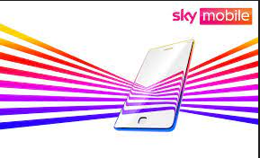

Introduction: Services: Mobile Phones: Accessories: Samsung: Iphone: Latest Deals: Contact Us:
There are lots of different phone services. Here are some Examples: -
1. 02 -
2. EE -
3. - Vodafone -
4. Tesco Mobile -
5. GiffGaff -
6. Sky Mobile
History about Phone Services. 02 Network was formed on 7th January 1985 as Cellnet. Cellnet was one of the first two mobile networks in the UK.
EE brand was created in 2010 with two of the UKs largest networks, Orange and T-Mobile.
Vodaphone started in 1981 with the establishment of the Racal Strategic Radio Ltd. Vodafone is the worlds largest telecommunications company.
Tesco Mobile was established in May 2003 and launched pre-paid mobile services in Tesco stores and online by the end of the year.

GiffGaff was founded by Gav Thompson a former marketing executive for Telefonica UK and was launched on 25th November 2009.
Sky Mobile was launched in November 2005, in partnership with Vodafone, Sky Mobile TV was launched which was the UKs first commercially avaliable mobile Tv service.
BEST DEALS HERE: 02 -